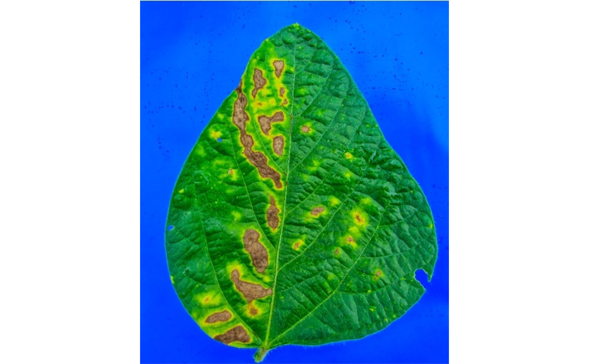
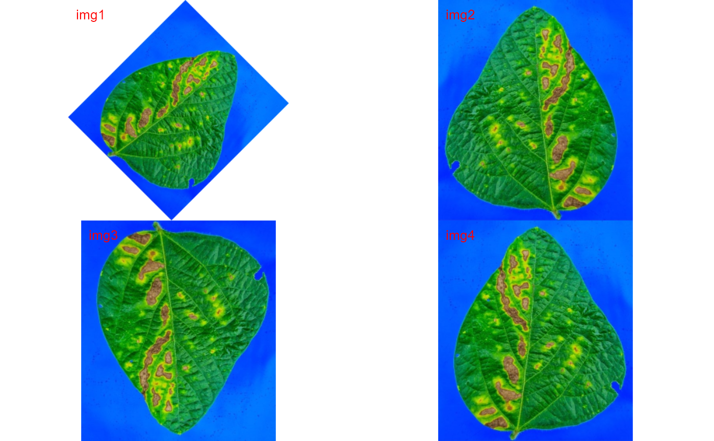

Performs image rotation and reflection
image autocrop() Crops automatically an image to the area of objects.
image_crop() Crops an image to the desired area.
image_trim() Remove pixels from the edges of an image (20 by default).
image_dimension() Gives the dimension (width and height) of an image.
image_rotate() Rotates the image clockwise by the given angle.
image_horizontal() Converts (if needed) an image to a horizontal image.
image_vertical() Converts (if needed) an image to a vertical image.
image_hreflect() Performs horizontal reflection of the image.
image_vreflect() Performs vertical reflection of the image.
image_resize() Resize the image. See more at EBImage::resize().
image_contrast() Improve contrast locally by performing adaptive
histogram equalization. See more at EBImage::clahe().
image_dilate() Performs image dilatation. See more at EBImage::dilate().
image_erode() Performs image erosion. See more at EBImage::erode().
image_opening() Performs an erosion followed by a dilation. See more at
EBImage::opening().
image_closing() Performs a dilation followed by an erosion. See more at
EBImage::closing().
image_filter() Performs median filtering in constant time. See more at
EBImage::medianFilter().
image_blur() Performs blurring filter of images. See more at
EBImage::gblur().
image_skeleton() Performs image skeletonization.
image_autocrop( image, index = "NB", edge = 5, parallel = FALSE, workers = NULL, verbose = TRUE, plot = FALSE ) image_crop( image, width = NULL, height = NULL, parallel = FALSE, workers = NULL, verbose = TRUE, plot = FALSE ) image_dimension(image, parallel = FALSE, workers = NULL, verbose = TRUE) image_rotate( image, angle, bg_col = "white", parallel = FALSE, workers = NULL, verbose = TRUE, plot = TRUE ) image_horizontal( image, parallel = FALSE, workers = NULL, verbose = TRUE, plot = FALSE ) image_vertical( image, parallel = FALSE, workers = NULL, verbose = TRUE, plot = FALSE ) image_hreflect( image, parallel = FALSE, workers = NULL, verbose = TRUE, plot = FALSE ) image_vreflect( image, parallel = FALSE, workers = NULL, verbose = TRUE, plot = FALSE ) image_resize( image, rel_size = 100, width, height, parallel = FALSE, workers = NULL, verbose = TRUE, plot = FALSE ) image_trim( image, edge = NULL, top = NULL, bottom = NULL, left = NULL, right = NULL, parallel = FALSE, workers = NULL, verbose = TRUE, plot = FALSE ) image_dilate( image, kern = NULL, size = NULL, shape = "disc", parallel = FALSE, workers = NULL, verbose = TRUE, plot = FALSE ) image_erode( image, kern = NULL, size = NULL, shape = "disc", parallel = FALSE, workers = NULL, verbose = TRUE, plot = FALSE ) image_opening( image, kern = NULL, size = NULL, shape = "disc", parallel = FALSE, workers = NULL, verbose = TRUE, plot = FALSE ) image_closing( image, kern = NULL, size = NULL, shape = "disc", parallel = FALSE, workers = NULL, verbose = TRUE, plot = FALSE ) image_skeleton( image, kern = NULL, parallel = FALSE, workers = NULL, verbose = TRUE, plot = FALSE, ... ) image_filter( image, size = 2, cache = 512, parallel = FALSE, workers = NULL, verbose = TRUE, plot = FALSE ) image_blur( image, sigma = 3, parallel = FALSE, workers = NULL, verbose = TRUE, plot = FALSE ) image_contrast( image, parallel = FALSE, workers = NULL, verbose = TRUE, plot = FALSE )
| image | An image or a list of images of class |
|---|---|
| index | The index to segment the image. See |
| edge |
|
| parallel | Processes the images asynchronously (in parallel) in separate
R sessions running in the background on the same machine. It may speed up
the processing time when |
| workers | A positive numeric scalar or a function specifying the maximum number of parallel processes that can be active at the same time. |
| verbose | If |
| plot | If |
| width, height |
|
| angle | The rotation angle in degrees. |
| bg_col | Color used to fill the background pixels, defaults to |
| rel_size | The relative size of the resized image. Defaults to 100. For
example, setting |
| top, bottom, left, right | The number of pixels removed from |
| kern | An |
| size |
|
| shape | A character vector indicating the shape of the brush. Can be
|
| ... | Additional arguments passed on to |
| cache | The the L2 cache size of the system CPU in kB (integer).
Defaults to |
| sigma | A numeric denoting the standard deviation of the Gaussian filter
used for blurring. Defaults to |
image_skeleton() returns a binary Image object.
All other functions returns a modified version of image depending on the
image_*() function used.
If image is a list, a list of the same length will be returned.
Tiago Olivoto tiagoolivoto@gmail.com
img <- image_resize(img, 50) img1 <- image_rotate(img, 45)img2 <- image_hreflect(img) img3 <- image_vreflect(img) img4 <- image_vertical(img) image_combine(img1, img2, img3, img4)